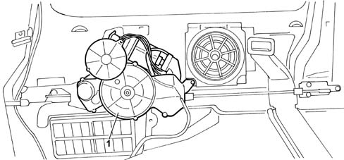
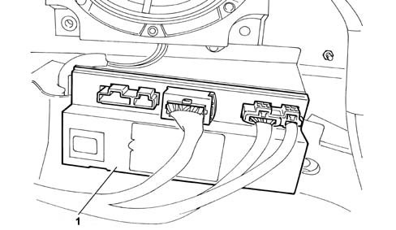
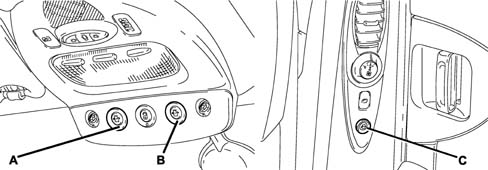
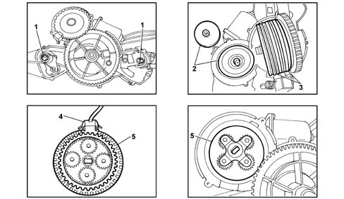
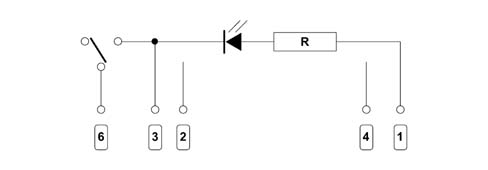
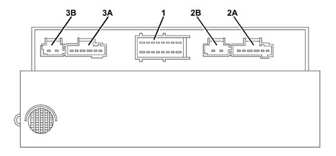

MOTORIZED SLIDING SIDE DOORS
- Path
- Descriptions > 55 ELECTRICAL EQUIPMENT > 5505 INSTRUMENT/GAUGE ELECTRICAL CIRCUITS > 5505A MULTI-FUNCTION COMPONENTS > MOTORIZED SLIDING SIDE DOORS
- Kind
- system description
- Applies to
- all engines; all production periods
- Interactive page
- https://sloeber94.github.io/elrnDB-fUlss/en/#/179000408
Applies to: all engines; all production periods
INTRODUCTION
The vehicle may be fitted with two motorized sliding side doors with an anti-crush safety system and child locks.
Each of the two sliding side doors is fitted with a motor fastened above the left and right rear wheel arches.

- 1 - Door operating motor
The management of the electric side doors is carried out by the Sliding Door Node (NPS) which is located above the right rear wheel arch.

- 1 - Sliding Door Node (NSC)
The door opening/closing control buttons are located in the front centre courtesy light and on the left and right side door pillars.

The button for activating the child locks is located on the control panel on the driver's front door.
A - Left rear sliding door opening/closing button
B - Right rear sliding door opening/closing button
C - Sliding door opening button on rear pillar
The motorized assembly comprises the following mechanical and electrical components:
- an electric motor capable of rotating in two directions by reversing polarity,
- an electric brake, an optical sensor,
- a speed reducer,
- protection for the motor against overheating,
- two leads that connect the reducer to the door pulley,
- a cable clearance recovery system,
- two idler pullies,
- sound insulation systems (e.g.: end of travel, silentblocs, etc., if necessary),
- a separate electronic node located on the bodyshell.

- 1 - Cable clearance recovery
- 2 - Electric brake
- 3 - Two cable idler pullies
- 4 - Optical sensor
- 5 - Speed reduction unit
OPERATING PRINCIPLE
Motorized sliding side door module function
Interface with the VAN
The NPS sends / receives the signals listed below via the VAN.
For the left door:
Acquisition of information:
- Control button on front courtesy light (left button),
- Control button on rear pillar (left),
- Lock contact (left),
- Door sliding sensor: power supply for sliding sensor, brake control, control of door sliding motor, control of (left) lock actuator.
For the right door:
Acquisition of information:
- Control button on front courtesy light (right button),
- Control button on rear pillar (right),
- Lock contact (right),
- Sliding sensor: power supply for sliding sensor, brake control, control of door sliding motor, control of (left) lock actuator.
The NPS also allows the fault diagnosis of the function.
Action in progress
The NPS detects the following information:
- pressing of one of the front or rear buttons or the remote control,
- action on the interior or exterior controls.
The NPS activates the door involved depending on the vehicle conditions and the user requests.
If the NBC sends the NPS impact information (priming of a pyrotechnic component), the latter halts the movements in progress.
The anti-crush safety function is controlled internally by the NPS.
The two doors are controlled by the same node and are independent.
Remote control
The NVO contains the high frequency receiver. When a signal to operate one of the sliding side doors issued by the remote control is received, the NVO produces a signal at the VAN CAR1 networt (DATAB) so that the NBC activates the network (determining the appearance of the +VAN) and then the NBC sends the command to the NPS.
Child locks
In the case of mechanical child locks, the information is supplied by the rear door locks; in this case, the management of the child lock function is independent for each door.
In the case of electric child locks, the information is joint with the rear electric windows inhibition information and is activated simultaneously at the two doors.
Sliding side doors operating condition
The go ahead for operation is managed by the NPS.
The table below summarizes the possible operating conditions for the sliding doors.
+ VAN = 0 | + VAN = 1 | Pos Key %ne; 0 | +AVV = 1 | Vehicle locked | Vehicle with superlocking on | Child locks activated | V > V limit | |
|---|---|---|---|---|---|---|---|---|
Front button | ok | Ok | ok | no (1) | ok | no | ok | ok (2) |
Rear button | ok | ok | ok | no (1) | ok | no | no | ok (2) |
Remote control | ok | ok | no | no (1) | no | no | ok | No |
CAI | ok | ok | ok | no (1) | ok | no (3) | ok (3) | ok |
CAE | ok | ok | ok | no (1) | ok (3) | no (3) | ok | ok |
Transition - Drive | no | ok | ok | no (1) | no (3) | no (3) | ok | ok |
Where:
- ok = authorized command
- no = unauthorized command
- no (1) = unauthorized command, the key in AVV stops the movement in progress
- ok (2) = authorized command for locking only, an opening command stops the movement in progress.
- (3): actions mechanically excluded
- CAI: interior opening control
- CAE exterior opening control
The NPS does not distinguish between internal and external.
Button lighting
The lighting of the buttons is not controlled by the NPS. There are no specific outputs at the NBC. The information is taken from the outputs for the rear side panel relays.
The lighting of the front buttons is activated when the front seat controls are enabled.
The lighting of the rear buttons is activated when the rear seat controls are enabled.
Standby mode and function standby exit
The NPS moves to standby mode when the +VAN is intertupted if the two sliding doors are closed.
If there is a break in the +VAN whilst there is movement, it continues until the door has stopped completely even if an obstacle is detected. The change to standby mode only takes place later on.
In standby mode the NPS examines the system input signals and sends the NBC a request to exit the standby mode if there is an input signal.
In standby mode, when one of the doors is opened, the NPS detects the sliding of the door and makes a request to the NBC to end the stanby condition. In this case the NPS will not be completely in the standby condition because the position sensors remain activated but the system consumption will be minimal.
End of standby for NPS
The end of standby for the NPS is determined by the presence of the +VAN.
If, after a request to end the standby by the NBC, the +VAN does not appear, the module remains in the standby condition.
Physical interface
The NPS reactivates the NBC via the VAN CAR2 network.
Information supplied by NPS to NBC
Movement of left and right doors:
- no movement = the door is still,
- closing movement = the door is moving in the closing direction,
- opening movement = the door is moving in the opening direction,
Position of left and right doors:
- indeterminate position = the module ignores the position of the door,
- door closed = the door is in the closed condition,
- door open = the door is between the closed and open conditions,
- door in opening end of travel position = the door is in the opening condition (door completely open).
Problem with left and right doors:
- fault = the module has detected a fault that prevents the operation of the door.
Request to unlock doors:
- door unlocking request = there is an opening request when the vehicle is locked.
Power supply
The power supply comes from the +Perm. There are two independent power supplies.
DESCRIPTION | MIN | TIP | MAX | CONDITIONS |
|---|---|---|---|---|
Current at DataB | 0 | +VAN not present | ||
Current at +VAN | 300mA | Operating | ||
Current at +VAN | 2A | Activation of +VAN | ||
Current at +Perm | 1mA | In standby (total closure and dispersion resistance at inputs > 10 M%OHgr;) | ||
( IPerm1 + IPerm2) | ||||
Current at +Perm | 200mA | In standby and at least one sliding door open (IPerm1 + IPerm2) | ||
Current at +Perm1 | 35A | Nominal ( T %le; 7 s) | ||
Current at +Perm2 | 35A | Nominal ( T %le; 7 s) | ||
Current at +Perm1 | 65A | Maximum ( T < 1 000 ms) | ||
Current at +Perm2 | 65A | Maximum ( T < 1 000 ms) | ||
Current at +Perm | 100A(1) | Maximum total current used for the function ( T < 1 000 ms) ( IPerm1 + IPerm2) |
INPUT AND OUTPUT ELECTRICAL SPECIFICATIONS
Front and rear button inputs
Specifications
Signal type: all or nothing
Transmitter components: switches connected to earth in ON condition.
The input features 2 RON and RON resistances. On one side the earth is connected to the resistance, on the other to the module input.
DESCRIPTION | MIN | TIP | MAX | UNIT | CONDITIONS |
|---|---|---|---|---|---|
ROFF | 10 | K%OHgr; | Above ROFF the condition is OFF | ||
RON | 50 | %OHgr; | Below RON the condition is ON | ||
Polarization current | 15 | 20 | 25 | mA | Node polarization resistance |
Filtering capacity | 1 | nF | Connected to dirty earth | ||
Refusal times | 10 | ms |
Diagram showing front and rear buttons:

- 1 - NBC
- 2 - Not used
- 3 - Earth
- 4 - Not used
- 6 - Sliding side door
Contact inputs at the locks
Specifications
Signal type: all or nothing
Transmitter components: switches connected to earth in ON condition, located inside the doors. A contact guarantees the electrical connections with the doors.
The input features 2 RON and RON resistances. On one side the earth is connected to the resistance, on the other to the module input.
DESCRIPTION | MIN | TIP | MAX | UNIT | CONDITIONS |
|---|---|---|---|---|---|
ROFF | 10 | K%OHgr; | Above ROFF the condition is OFF | ||
RON | 50 | %OHgr; | Below RON the condition is ON | ||
Polarization current | 15 | 20 | 25 | MA | Node polarization resistance |
Filtering capacity | 1 | NF | Connected to earth | ||
Refusal times | 1 | Ms | Switch | ||
Refusal times | 1 | Ms | Terminal contact |
The first lock position information is not considered unless it is not consistent with the position calculated for the door.
If the second stage lock information is not detected within a preset time, the module halts the operation of the motor and the brake.
Sensor inputs
Specifications
Signal type: all or nothing
Transmitter components: electronic sensors with outputs via transistors fitted in the open manifold, transmitter earthed. Electronic node polarization resistances
DESCRIPTION | MIN | TIP | MAX | UNIT | CONDITIONS |
|---|---|---|---|---|---|
High level voltage | Ualim - 2 V | Ualim +1 V | V | ||
Low level voltage | -1 | 1 | V | ||
Polarization current | 15 | 20 | 40 | mA | |
Cyclical ratio | 40 | 50 | 60 | % | |
Offset between the outputs | 80 | 90 | 100 | Degrees | |
Filtering capacity | 1 | nF | Connected to earth |
Sensor power supply outputs
Specifications
Signal type: all or nothing
Receiver components: position sensors
Output stages: high side type, protected by short circuits to the positive pole and to earth. There is only one shared power supply at the two doors.
Signal specifications:
DESCRIPTION | MIN | TIP | MAX | UNIT | CONDITIONS |
|---|---|---|---|---|---|
High level voltage | 4,5 | 5 | 5,5 | V | |
Low level voltage | 0 | V | |||
Current in OFF condition | 0 | mA | It behaves like an interrupted circuit | ||
Current in ON condition | 20 | mA | For door | ||
Output capacity | 1 | nF |
Lock activator outputs
Specifications
Signal type: all or nothing
Receiver components: activators for the locks, located inside the doors. A contact guarantees the electrical connections with the doors.
Output stages: high side type, protected by short circuits to the positive pole and to earth.
Signal specifications:
DESCRIPTION | MIN | TIP | MAX | UNIT | CONDITIONS |
|---|---|---|---|---|---|
Current in OFF condition | 0 | mA | The switching should not produce excess voltage | ||
Current in ON condition | 5 | 6,5 | A | Electric motor | |
Time in ON condition | TAOS | ms |
Brake outputs
Specifications
Signal type: all or nothing
Receiver components: Self
Output stages: high side type, protected by short circuits to the positive pole and to earth
Signal specifications:
DESCRIPTION | MIN | TIP | MAX | UNIT | CONDITIONS |
|---|---|---|---|---|---|
Current in OFF condition | 0 | mA | It behaves like an interrupted circuit | ||
Current in ON condition | 4 | A | |||
Time in ON condition | TCde | s |
Door sliding motor outputs
Specifications
Signal type: all or nothing
Receiver components: motors
Output stages: Reversal relays, outputs protected by short circuits to the positive pole and to earth
Signal specifications:
DESCRIPTION | MIN | TIP | MAX | UNIT | CONDITIONS |
|---|---|---|---|---|---|
Current in OFF condition | 0 | mA | Outputs short circuited | ||
Current in ON condition | 30 | 60 | A | IMAX < 1 000 ms | |
Time in ON condition | TCde | s | |||
Drop in voltage | 500 | mV | Below 60 A |
If the module allows it, the switching of the relays takes place at zero current.
SLIDING DOOR NODE
The following figure shows the NPS.

Passenger compartment 1 band connector: 16-way hybrid 1.5 - 2.8; colour: Black
Pin | Function |
|---|---|
1 | +Battery 1 (right door power supply) |
2 | Left front door button |
3 | Left rear button |
4 | + VAN |
5 | Left door lock operation |
6 | Right rear button |
7 | Contact at right door lock |
8 | +Battery 2 (left door power supply) |
9 | Earth 1 (right door power supply) |
10 | Contact at left door lock |
11 | DataB |
12 | not connected |
13 | Date |
14 | Right door lock operation |
15 | Right front door button |
16 | Earth 2 (left door power supply) |
Right sliding side door 2A band connector: 6-way hybrid 1.5 - 2.8; colour: Black
Pin | Function |
|---|---|
1 | Right door sensor +power supply |
2 | Right door signal S1 |
3 | Right door brake earth |
4 | Right door brake + |
5 | Right door signal S2 |
6 | Right door sensor - power supply |
Right sliding side door 2B band connector: type: 2-way hybrid 1.5 - 2.8; colour: Black
Pin | Function |
|---|---|
1 | Right door closing direction motor + |
2 | Right door opening direction motor + |
Left sliding side door 3A connector: type: 6-way hybrid 1.5 - 2.8; colour: Green
Pin | Function |
|---|---|
1 | Left door sensor +power supply |
2 | Left door signal S1 |
3 | Left door brake earth |
4 | Left door brake + |
5 | Left door signal S2 |
6 | Left door sensor - power supply |
Left sliding side door band 3B connector: type: 2-way hybrid 1.5 - 2.8; colour: Green
Pin | Function |
|---|---|
1 | Left door closing direction motor + |
2 | Left door opening direction motor + |
Passenger compartment 1 band connector: type: 16-way hybrid 1.5 - 2.8; colour: Black
Pin | Function |
|---|---|
1 | +Battery 1 (right door power supply) |
2 | Left front door button |
3 | Left rear button |
4 | + VAN |
5 | Left door lock operation |
6 | Right rear button |
7 | Contact at right door lock |
8 | +Battery 2 (left door power supply) |
9 | Earth 1 (right door power supply) |
10 | Contact at left door lock |
11 | DataB |
12 | NC |
13 | Date |
14 | Right door lock operation |
15 | Right front door button |
16 | Earth 2 (left door power supply) |
Right sliding side door 2A band connector: type: 6-way hybrid 1.5 - 2.8; colour: Black
Pin | Function |
|---|---|
1 | Right door sensor +power supply |
2 | Right door signal S1 |
3 | Right door brake earth |
4 | Right door brake + |
5 | Right door signal S2 |
6 | Right door sensor - power supply |
Right sliding side door 2B band connector: type: 2-way hybrid 1.5 - 2.8; colour: Black
Pin | Function |
|---|---|
1 | Right door closing direction motor + |
2 | Right door opening direction motor + |
Left sliding side door band 3A connector: type: 6-way hybrid 1.5 - 2.8; colour: Green
Pin | Function |
|---|---|
1 | Left door sensor +power supply |
2 | Left door signal S1 |
3 | Left door brake earth |
4 | Left door brake + |
5 | Left door signal S2 |
6 | Left door sensor - power supply |
Left sliding side door band 3B connector: type: 2-way hybrid 1.5 - 2.8; colour: Green
Pin | Function |
|---|---|
1 | Left door closing direction motor + |
2 | Left door opening direction motor + |
Fuses: The two permanent + are each protected by a 40 A automatic reset fuse
Flat contact board: 10-way black, left/right and side
Pin | Function |
|---|---|
1 | Element unlocking control |
2 | Child lock closing control |
3 | Child lock opening control |
4 | Locking elements control |
5 | Left (right) sliding side door opening/closing actuator control |
6 | Earth |
7 | Left (right) rear electric windows descent information |
8 | Left (right) rear electric windows ascent information |
9 | Left (right) rear electric windows ascent + motor |
10 | Left (right) sliding side door integrated contact lock information |
OPENING/CLOSING OPERATION
Nominal operation
The management of the enablement for operation on the basis of the vehicle condition is managed by the NPS.
Anti-crush safety function during closing
Anti-crush safety function activation conditions:
- the door is electrically locked,
- the device detects the presence of an obstacle.
If both conditions occur, the NPS starts the anti-crush safety cycle which includes the following stages:
- a: stopping the door,
- b: controlling the activation of the lock if the door is almost closed and reversing the sliding direction of the door,
- c: opening the door by a predefined amount (reopening value),
- d: stopping the door.
Anti-crush safety function during opening
Anti-crush safety function activation conditions:
- the door is electrically open,
- the device detects the presence of an obstacle.
If both conditions occur, the NPS starts the anti-crush safety cycle which involves stopping the door.
To limit the current absorption when the door opening motors start, their movement is offset by a certain time. If the two commands are simultaneous, the right door is operated first.
The above strategy is not applied to an anti-crush safety sequence.
Request to unlock doors
If the vehicle is locked, before opening the door following a command using the button or the remote control, the NPS requests the unlocking of the vehicle doors.
The door unlocking request can only be carried out if the vehicle is locked and if the opening of the door has been authorized.
Operating sequence
Opening request using the front or rear button or the remote control
Possible request for end of standby for VAN
Central unlocking of vehicle doors via the NBC,
Receipt of vehicle unlocked information,
Opening of the door, this action is carried out even if the order has disappeared.
If no information is received concerning the unlocking condition within 1500 ms of the unlocking request, the NPS ignores the opening request and waits for a new command.
Manual door drive
The manual drive for a sliding door is inhibited after the start of an anti-crush safety function procedure.
Each new command reactivates the possibility of operating the doors manually.
The manual sliding of the door in the closing direction causes the electrical closing of the actual door.
This function is activated with the +VAN present and the +VAN absent, door open, in this case the sliding of the door reactivates the network.
To check the closing of the door, the NPS does not wait for the presence of the +VAN (the enablement conditions are satisfied when the door is open).
System heat protection
The lock is thermally protected.
The two door motors are controlled independently, if they are overloaded the system stops any movement in progress; in this case no electrical movement can be made until the overheated motor cools down.
Operation with key in + AVV
The +AVV present information halts all movements with the exception of those connected to the anti-crush safety function.
When the +AVV information disappears, the previous movement continues until it reaches its conclusion.
If a locking operation is interrupted, a new control relaunches a complete opening procedure.
If a command is carried out in the presence of +AVV information, the latter is ignored and no sound is produced
Opening electronic end of travel
To reduce the stresses on the door mechanical end of travel, the system stops the door during the opening stage before it reaches the mechanical end of travel. This function is defined as the electronic end of travel.
The system never operates the door beyond the electronic end of travel, including the following cases:
- closing anti-crush safety function procedure,
- reversal of closing movement.
Reduced mode operation
Contact at the locks with interrupted circuit:
- whilst opening: it is only possible to open the door manually, with an external or internal control
- whilst closing: activation of the anti-crush safety function, manual closing of the door.
Contact at the locks short circuited:
- inhibition of the electric controls for the corresponding door,
- opening/closing of the corresponding door manually only,
- production of an auditory signal for each command not carried out,
- +VAN interrupted.
Sound information
The system includes three types of sound signals:
- a sound when the door is opened and closed,
- a sound for the activation of the anti-crush safety function and for the failure to carry out a command, following unauthorized operation,
- a sound for the failure to carry out a command, following irregular operation.
INITIALIZATION PROCEDURE
The initialization procedure is carried out in the following cases:
- battery disconnection,
- removing/refitting sliding door motor.
The initialization procedure is independent for the two doors and can only be carried out if the door in question is closed.
If the door is open, the commands are ignored and a sound is produced (failure to carry out a command).
To initialize the system it is necessary to:
- start with the door closed,
- control an opening (electrical),
- control a closing (electrical),
- control another opening (electrical).
The initialization is not lost from the system after the door is closed manually.
DIAGNOSTICS
General remarks
The NPS analyzes and memorizes faults.
Fault codes are transmitted to the NBC via the VAN CAR 2 network.
The detection of a permanent system fault prevents the nominal operation of the door.
The following are permanent door faults:
- processing unit faults,
- sensor supply faults,
- button faults,
- lock contact faults,
- position sensor faults,
- lock operation faults,
- motor faulty,
- brake faults.
List of faults
Button or switch fault
When the button (switch) has an interrupted circuit (not detected by the NPS): no action can be taken.
When there is a short circuit: the corresponding input is inhibited and the +VAN interrupted.
A contact is considered to be short circuited if it remains stationary for more than 20 seconds consecutively. This fault is memorized and the corresonding input is inhibited.
The interruption of the contact for more than five seconds cancels the inhibition of the corresponding input and the fault is preserved in the memory.
Position sensor fault
Types of faults:
- interrupted circuit: logic level kept at high condition,
- short circuit to earth: logic level kept in low condition.
If the position sensor is faulty:
- inhibition of the electric controls for the corresponding door,
- the corresponding door can only be opened and closed manually,
- production of an auditory signal for each command not carried out.
No sensor information
Types of faults:
- short circuit to earth,
- short circuit to +12V.
This fault can only be detected if there is a power supply
If a command to operate the motor is made and a sensor signal is not detected or disappears:
- an anti-crush safety function sequence is activated,
- the corresponding door can only be opened and closed manually,
- production of an auditory signal for each command not carried out.
Lock operation fault
Types of faults:
- interrupted circuit,
- short circuit to earth.
The faults can only be detected with the door closed, during the actuator control.
If the operation of the lock is faulty:
- inhibition of the electric controls for the corresponding door,
- the corresponding door can only be opened and closed manually,
- production of an auditory signal for each command not carried out.
Brake fault
Types of faults:
- interrupted circuit
- short circuit to earth
The faults can only be detected whilst the operation of the brake is in progress.
If the operation of the brakes is faulty:
- inhibition of the electric controls for the corresponding door,
- the corresponding door can only be opened and closed manually,
- production of an auditory signal for each command not carried out.
Door motor fault
Types of faults:
The faults are only detected at the start of the motor operating stage.
If the operation of the motor is faulty:
- inhibition of the electric controls for the corresponding door,
- the corresponding door can only be opened and closed manually,
- production of an auditory signal for each command not carried out.
Fault + perm
The disappearance of one or more permanent faults should not affect the VAN, irrrespective of the +VAN condition
Earth faulty
If one of of the two earths disappears or is not connected, the corresponding door will not work.
Power output fault (motor, engagement, lock operation)
An auditory signal will be produced for each command not carried out.
When the +VAN disappears, no power output is activated.
A power output short circuited to +12V will result in the two doors failing to work.
Speed information fault
Types of faults: receipt of invalid vehicle speed information.
If the value of the speed information is not valid, the NPS will consider the vehicle speed to be above the limit.
Beyond limit voltage fault
Types of faults:
- supply voltage below the minimum operating limit,
- supply voltage above the maximum operating limit.
When this type of fault occurs:
- the electric controls for the two doors are inhibited,
- any movement started is completed,
- production of an auditory signal for each command not carried out.
The restoration of the voltage to the operating limits authorizes the electrical controls.
Mechanical end of travel opening position fault
If the module detects a manual movement of the door beyond the mechanical opening end of travel position, the end of travel recognition procedure starts again after the next electrical opening of the door.
This can occur if an obstacle is detected whilst opening during the initialization procedure.
Lock contact fault
Types of faults:
- interrupted circuit (no signal during a lock operating command with the door closed),
- short circuit to earth.
In the case of a short circuit to earth, the end of standby for the NPS is only possible via the +VAN.
A lock contact is considered to be short circuited if it remains stationary for more than 20 seconds consecutively. This fault is stored in the memory. The operation of the corresponding door is inhibited.
The interruption of the contact for more than 5 seconds with the door closed cancels the inhibition of the operation of the corresponding door.
Initialization fault
Types of faults:
- initialization not carried out,
- initialization not finished,
- initialization impossible,
- manual sliding of the door beyond the mechanical end of travel.
Processing unit fault
Types of faults:
- VAN protocol management system fault,
- EEPROM fault (reading or writing),
- CAN line fault.